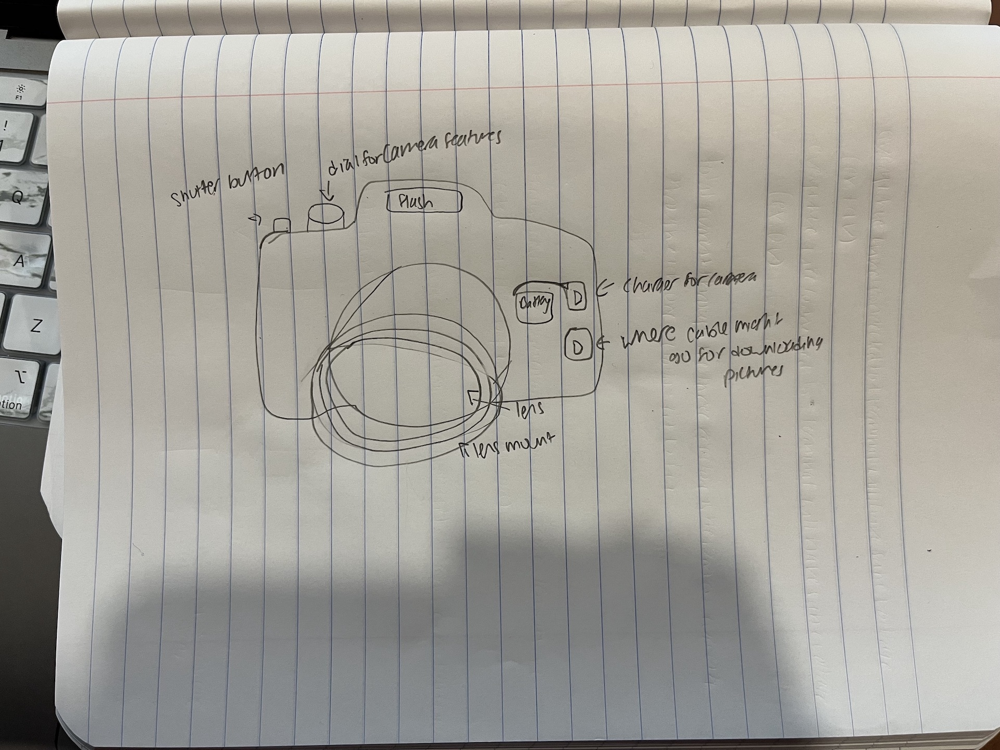

<h1 style="background-color:Tomato;">Final Project Idea</h1>
I am thinking of building a digital camera from scratch. I've only made a lomographic camera with film but I'm interested in taking it further by creating a digital camera that can produce photos in jpeg that can be downloaded onto the computer via bluetooth or through a cable connected to the computer. I know you need a camera module to do this, and some brands have made their own but I want to create it from scratch. I would also need a memory card, and I would need to create my own microcontroller system. In addition, I would need to make a button, get batteries, and make a SD card holder. I also want to put in some features like built-in flash, video recording ability, and being able to view the photos in the camera.
This is what it might look like:
